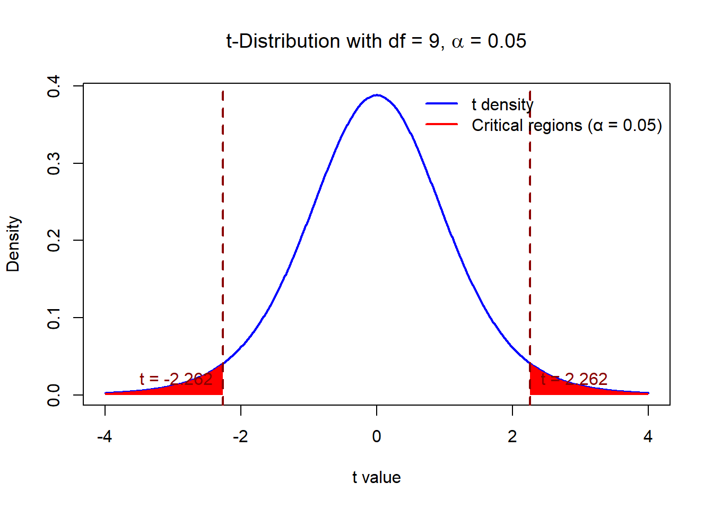
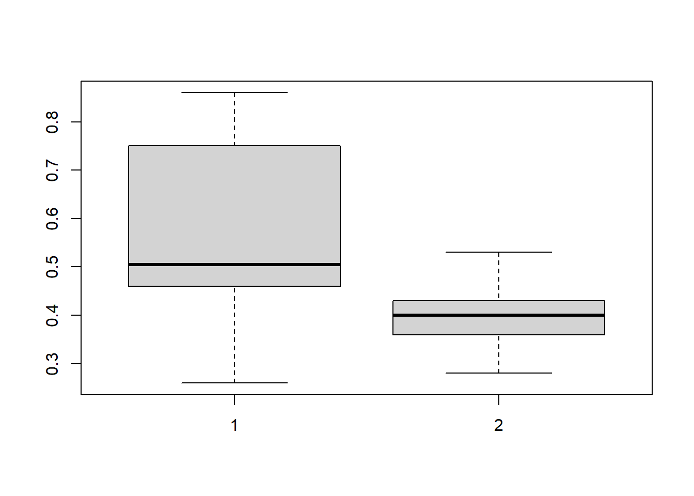

Week 6: Hypothesis Testing on Mean(s)
References
- Data Science Foundations with Python with zyLabs, zyBooks, a Wiley brand. http://www.zybooks.com
- Probability & Statistics for Engineers & Scientist, 9th Edition, Ronald E. Walpole, Raymond H. Myers, Sharon L. Myers, Keying Ye, Prentice Hall
Objectives
Know the process and result of a hypothesis test for a population parameter.
Recognize that a hypothesis test may result in an incorrect conclusion, or one of two possible types of error, and each error has consequences.
Identify the appropriate inference method to answer questions about one mean, and two means.
State the null and alternative hypotheses for one mean, and two means hypothesis tests.
Interpret the test statistic and p-value and make a conclusion about the population parameter(s) based on a p-value.
Know how to use
t.test.
Intro to Hypothesis testing
A hypothesis test is a method for evaluating a claim, or hypothesis, about a population parameter by examining the statistical evidence against the claim based on a sample. The conclusion of a hypothesis test is a decision that the observed data either indicate the claim is plausible or support an alternative explanation. The following steps outline the general process of conducting a hypothesis test.
State null and alternative hypotheses about parameters. The null hypothesis, \(H_0\) , is typically the by-chance or no-effect explanation, and the alternative hypothesis,\(H_1\), is typically the explanation of an effect, or difference.
Calculate a statistic of interest from the sample data that is used to evaluate the null hypothesis.
Determine the p-value, or likelihood, of obtaining a statistic at least as extreme as the observed statistic when the null hypothesis is true.
Draw a conclusion about the null hypothesis based on the statistical evidence provided by the p-value.
Inference for Mean(s)
One mean
For a numerical characteristic of a population, typically the population mean is of interest. If we know the population variance, theory-based inference methods for a mean are similar to the methods for a proportion, i.e., using the standard normal distribution. However, in general, the population variance is unknown. Therefore, the statistics tend to follow the t-distribution rather than the standard normal distribution.
Remark: The \(t\)-distribution can still be used even if the population distribution is not normal, as long as
- the sample size \(n\) is large.
- the population distribution is not too-skewed.
Example 1. One mean hypothesis test
Data are collected on a neutral substance (pH = 7.0). A sample of the measurements were taken with the data as follows: \[7.07, 7.00, 7.10, 6.97, 7.00, 7.03,7.01,7.01,6.98,7.08\] Assume the measurements follow an approximately normal distribution.
Parameter: A neutral substance pH value, \(\mu\)
Hypotheses:
The null hypothesis states that the mean is 7.0. The alternative hypothesis states the mean is different from 7.0.
\[\begin{align*} H_0: \mu = 7.0,\\ H_1: \mu \ne 7.0. \end{align*}\]
Observed data:
A sample of measurements \[7.07, 7.00, 7.10, 6.97, 7.00, 7.03,7.01,7.01,6.98,7.08\]
We can have \[ \bar{x} = 7.025,\qquad s = 0.044\]
Test statistic
The standardized \(t\) test statistic’s calculation assumes the null hypothesis is true. The standard deviation of the sample mean’s sampling distribution is estimated by \(s/\sqrt{n}\).
\[ t = \frac{\bar{x}-\mu}{s/\sqrt{n}} = \frac{7.025-7}{0.044/\sqrt{10}} \approx 1.7954\]
This follows a t-distribution with \(df = n-1 = 9\) under the null hypothesis.
Critical Region
For the two-sided hypothesis \[\begin{align*} H_0: \mu = \mu_0,\\ H_1: \mu \ne \mu_0. \end{align*}\]
We reject \(H_0\) at significance level \(\alpha\) when the computed \(t\)-statistic \[t = \frac{\bar{x}-\mu_0}{s/\sqrt{n}}\] exceeds \(t_{\alpha/2, n-1}\) or is less than \(-t_{\alpha/2,n-1}\). That is \[t> t_{\alpha/2, n-1} \text{ or } t < -t_{\alpha/2, n-1}\] These regions are called critical regions.
Let’s consider \(\alpha = 0.05,n =10\). We can see the red critical regions.
We know here the test statistic is not in the critical region. We should not reject the null hypothesis.
p-value
We can also calculate p-value \(P(|t| > t_{\text{statistics}})\) of this statistic.
tstatistic <- 1.7954
2*pt(-tstatistic,df = 9)[1] 0.1061606The p-value is much larger than \(0.05\). We should not reject the hypothesis.
We can also use t.test here.
#Need to specify mu
phmeter <-c(7.07,7.00,7.10,6.97,7.00,7.03,7.01,7.01, 6.98,7.08)
t.test(phmeter, mu = 7)
One Sample t-test
data: phmeter
t = 1.7954, df = 9, p-value = 0.1062
alternative hypothesis: true mean is not equal to 7
95 percent confidence interval:
6.993501 7.056499
sample estimates:
mean of x
7.025 When p-value is less than or equal to the level of significance \(\alpha\), we reject the null hypothesis; otherwise we do not reject the null hypothesis.
Notice that the sample size of 10 is rather small. An increase in sample size (perhaps another experiment) may sort things out.
Note: How to choose a good sample size is an advanced topic.
In-class Exercise: Tests on a Single Mean (Variance Unknown)
Test the hypothesis that the average content of containers of a particular lubricant is 10 liters if the contents of a random sample of 10 containers are 10.2, 9.7, 10.1, 10.3, 10.1, 9.8, 9.9, 10.4, 10.3, and 9.8 liters. Use a 0.01 level of significance and assume that the distribution of contents is normal.
Type I and type II errors
The decision from a hypothesis test is to either reject the null hypothesis or fail to reject the null hypothesis. The significance level, \(\alpha\) , of a hypothesis test is how small the p-value must be to conclude the data provide enough statistical evidence to reject the null hypothesis. The decision is to reject the null hypothesis if the p-value is less than or equal to \(\alpha\), and fail to reject the null hypothesis if the p-value is greater than \(\alpha\).
In reality, either the null hypothesis is true or the alternative hypothesis is true. Thus, the conclusion from a hypothesis test is either correct or incorrect. Ex: Suppose \(H_0\) states that the population mean commute time is 25 minutes. If we reject \(H_0\) when the true population mean is actually 25 minutes, we make a Type I error. If we fail to reject \(H_0\) when the true population mean is not 25 minutes, we make a Type II error.
A type I error is rejecting the null hypothesis in favor of the alternative when in reality the null hypothesis is true.
A type II error is failing to reject the null hypothesis when in reality the alternative hypothesis is true.
\[ \begin{array}{c|cc} \text{Decision V.S. In Reality} & H_0 \text{ is true} & H_0 \text{ is false} \\ \hline \text{Reject } H_0 & \text{Type I error} & \text{Correct decision}\\ \text{Fail to reject } H_0 & \text{Correct decision} & \text{Type II error} \end{array} \]
Checkpoint Questions: Type I and Type II Errors
A new fitness app estimates users’ daily calorie burn using wearable-device data. Before releasing the app, the development team tests whether the mean absolute error of the calorie estimates is at most 100 calories, so the app is sufficiently accurate.
They conduct a hypothesis test on the population mean error ().
Match each description with the correct term.
Terms: Hypotheses; Type I error; Type II error; Type I error consequence; Type II error consequence
a) \[H_0: \mu = 100, \qquad H_1: \mu > 100\]
b) Spend additional time and money to improve the app’s accuracy when the app already meets the desired accuracy level.
c) Fail to reject \(H_0\) when the true mean error is greater than 100 calories.
d) Reject \(H_0\) and conclude that the mean error is greater than 100 calories when the true mean error is 100 calories.
e) Release the app because the test fails to detect that its mean error is greater than 100 calories, resulting in inaccurate calorie estimates for users.
Two means
If we know the population variances, theory-based inference methods for a mean are similar to the methods for two proportions. However, in general, the population variance is unknown. We should consider the population variances are equal or not. The good thing is no matter the variances are equal or not, the \(t\)-statistic is the same. The difference is the degrees of freedom.
Example 2. Comparison of two population means
In a study in which minerals are transferred from the fungus to the trees and sugars from the trees to the fungus, 20 northern red oak seedlings exposed to the fungus Pisolithus tinctorus were grown in a greenhouse. All seedlings were planted in the same type of soil and received the same amount of sunshine and water. Half received no nitrogen at planting time, to serve as a control, and the other half received 368 ppm of nitrogen in the form NaNO3. The stem weights, in grams, at the end of 140 days were recorded as follows:
No Nitrogen: 0.32 0.53 0.28 0.37 0.47 0.43 0.36 0.42 0.38 0.43
Nitrogen: 0.26 0.43 0.47 0.49 0.52 0.75 0.79 0.86 0.62 0.46
Parameter:
\(\mu_{NON} =\) mean stem weight of the seedlings without nitrogen
\(\mu_{NIT} =\) mean stem weight of the seedlings with nitrogen
Hypotheses:
\[\begin{align*} H_0: \mu_{NIT} = \mu_{NON} ,\\ H_1: \mu_{NIT} \ne \mu_{NON}. \end{align*}\] where the population means indicate mean weights.
Observed data:
\[ n_{NIT} = 10, \bar{x}_{NIT} = 0.565, s_{NIT} = 0.1867 \qquad n_{NON} = 10, \bar{x}_{NON} = 0.399, s_{NON} = 0.0728.\]
Test statistic
The \(t\) test statistic and the p-value can be obtained using statistical software.
In R, we can use t.test for two sample t-test. Don’t forget to add the condition var.equal = TURE.
noNitro<- c(0.32,0.53 ,0.28, 0.37, 0.47, 0.43, 0.36, 0.42,0.38,0.43)
Nitro<- c(0.26,0.43,0.47,0.49,0.52,0.75,0.79,0.86, 0.62,0.46)
t.test(Nitro,noNitro, var.equal = TRUE, conf.level = .95)
Two Sample t-test
data: Nitro and noNitro
t = 2.6191, df = 18, p-value = 0.01739
alternative hypothesis: true difference in means is not equal to 0
95 percent confidence interval:
0.03284212 0.29915788
sample estimates:
mean of x mean of y
0.565 0.399 Here we make an assumption that the variances are equal. Does that make sense?
boxplot(Nitro,noNitro)
Can we do a mean test with different variances? Yes!
t.test(Nitro,noNitro, var.equal = FALSE, conf.level = .95)
Welch Two Sample t-test
data: Nitro and noNitro
t = 2.6191, df = 11.673, p-value = 0.02286
alternative hypothesis: true difference in means is not equal to 0
95 percent confidence interval:
0.02747562 0.30452438
sample estimates:
mean of x mean of y
0.565 0.399 In this example, both methods lead to the same conclusion: we reject \(H_0\).
In-class Exercise: Tests on Two Means (Unequal Variance)
A study was conducted by the Department of Zoology at Virginia Tech to determine if there is a significant difference in the density of organisms at two different stations located on Cedar Run, a secondary stream in the Roanoke River drainage basin. Sewage from a sewage treatment plant and overflow from the Federal Mogul Corporation settling pond enter the stream near its headwaters. The following data give the density measurements, in number of organisms per square meter, at the two collecting stations:
Stations 1: \[5030,13700,10730,11400,860,2200,4250,15040,4980,11910,8130,26850,17660, 22800,1130,1690\]
Stations 2: \[2800, 4670,6890,7720,7030,7330,2810,1330,3320,1230,2130,2190\]
Is there sufficient evidence, at the 0.05 significance level, to conclude that the mean densities at the two stations are different? Assume that the observations come from normal populations with different variances.